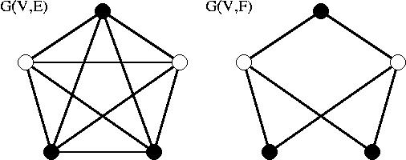
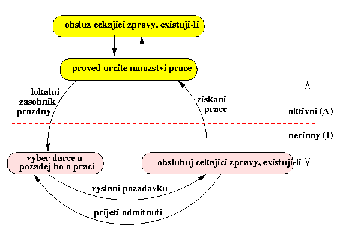
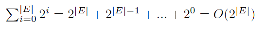
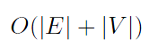
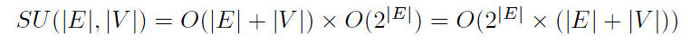
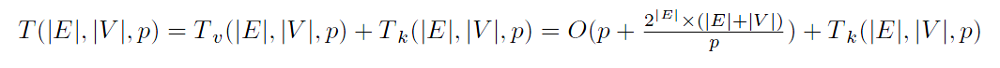

Paralelni algoritmus pro reseni problemu bipartitniho podgrafu
Petr Smejkal
David Vavrousek
5. rocnik, obor pocitace, K336 FEL CVUT, Karlovo nam. 13, 121 35 Praha 2
May 10, 2010
1 Definice problemu a popis sekvencniho algoritmu
1.1 Definice problemu BPG: bipartitni podgraf
1.1.1 Vstupni data
n = prirozene cislo predstavujici pocet uzlu grafu, n ≥ 5
k = prirozene cislo radu jednotek predstavujici maximalni stupen uzlu grafu
G(V,E) = jednoduchy neorientovany neohodnoceny souvisly graf o n uzlech a stupni nejvyse k
Pouzijte generator grafu Generator1 s typem grafu "-t 1", ktery vygeneruje
souvisly neorientovany neohodnoceny graf.
1.1.2 Definice
Graf G(V,E) je bipartitni jestlize muzeme rozdelit mnozinu uzlu
na disjunktni pomnoziny U a W tak, ze kazda hrana v G spojuje uzel z U s uzlem z W.
Bipartitni graf je mozne uzlove obarvit 2 barvami.
1.1.3 Ukol
Graf G(V,E) je definovan mnozinou uzlu V a mnozinou hran
E. Ukolem je nalezt maximalni podmnozinu hran F takovou,
ze graf G(V,F) je bipartitni (viz obrazek).

Bipartitni podgraf G(V,F) grafu G(V,E).
1.2 Popis sekvencniho algoritmu
Zakladnim algoritmem bylo prochazeni stavoveho prostoru do hloubky. Hloubka stavoveho stromu je omezena na |E|. Pro reprezentaci stavu jsme si vytvorili tridu State, ktera obsahuje matici sousednosti grafu. Pripustny mezistav je podmnozina hran F, ktera tvori bipartitni podgraf G(V,F). Cena, kterou maximalizujeme, je pocet hran v F. Pokud je graf G bipartitni, pak trivialne F=E, jinak F je podmnozinou E. Vstupni graf nejprve otestujeme, zda je bipartitni (linearni algoritmus) a pokud ne, pouzijeme algoritmus prohledavani do hloubky. Zakladni myslenkou algoritmu je postupne odebirani hran. Na zasobnik se vlozi pocatecni stav, reprezentujici zadany graf. Dale se postupuje podle algoritmu prohledavani do hloubky, pri expanzi se na zasobnik vlozi 2 nove stavy, jeden s hranou n a jeden bez ni. Celkovy pocet hran n urcuje maximalni hloubku stromu reprezentujiciho graf stavoveho prostoru. Pro orezavani stavoveho prostoru vyuzivame techniky branch and bounds, cely algoritmus je tedy DFS-BB. Jedna se o uplne prohledavani stavoveho prostoru do hloubky |E|-|V|. Prohledavani se muze navracet v mezistavech s |F|=|V|-1 (strom je trivialne bipartitni, proto musi existovat reseni s |F|=|V|-1).Trivialni dolni mez je |F|=|V|-1.Tesna horni mez neni znama. Trivialni horni mez je |F|=|E|.
2 Popis paralelniho algoritmu a jeho implementace v MPI
Zakladem paralelniho algoritmu je sekvencni algoritmus. S tim rozdilem, ze stavovy prostor se disjunktne rozdeli mezi vice procesoru, ktere ho samostatne zpracovaji. Kvuli omezujicim podminkam algoritmu DFS-BB si procesory mezi sebou posilaji nalezena nova nejlepsi reseni. Jednotlive procesory maji svuj vlastni lokalni zasobnik a pouziva se dynamicke vyvazovani vypocetni zateze (load balancing). Vyvazovani zateze je implementovano pomoci 2 algoritmu: algoritmu pro deleni zasobniku (ADZ) a algoritmu pro hledani darce (AHD), kterymi necinny procesor s prazdnym lokalnim zasobnikem (stav I=idle) ziskava praci od vhodneho darce, coz je aktivni procesor s neprazdnym zasobnikem (stav A=active), jehoz zasobnik odpovida dostatecne velkemu stavovemu podprostoru. Procesor si o praci zada procesor s cislem o jedno vetsi, pokud ten praci nema, zvysi se citac o jednicku, takto cyklicky zada procesory dokud neobdrzi praci nebo pozadavek na ukonceni. Na pocatku procesor P1 zna pocet procesoru p, na kterych se uloha bude resit. Provede dostatecny pocet expanzi pocatecniho stavu, rozdeli svuj zasobnik na p casti a rozesle jednotlive casti ostatnim procesorum. Vsechny procesory zacnou prohledavat svuj prideleny podprostor a pritom realizuji programovou smycku naznacenou na tomto obrazku.

Aktivni procesor, ktery vycerpa svuj prideleny dil prace, se stane necinny a pomoci algoritmu pro hledani darce AHD vybere darce a posle mu zadost o praci. Pokud mu darce praci posle, prepne se zpet do stavu aktivni. Pokud se mu vrati odmitnuti, vse se opakuje. Procesor ve stavu necinny musi take periodicky kontrolovat, zda nema ve fronte zadosti o praci, na ktere odpovida odmitnutim, nebo zpravy o nalezeni reseni jinym procesorem. V pripade, ze se jedna o optimalni reseni, jsou to v podstate zadosti o ukonceni vypoctu. Aktivni procesor provadi fixni objem prace nad lokalnim zasobnikem (expanduje urcity dany pocet stavu na lokalnim zasobniku) a pak kontroluje frontu zprav. V te mohou byt zadosti o praci, informace o nalezeni reseni jinym procesorem a zadosti o ukonceni vypoctu. Aktivni procesor zpracovava zadosti o praci nasledujicim zpusobem: Pokud je velikost lokalniho zasobniku vetsi nez nastavena minimalni mez, tak se zasobnik rozdeli na polovinu a jedna cast se zasle zadateli o praci. Pokud neni, tak procesor pozadavek odmitne.
3 Analyza slozitosti reseni
3.1 Analyza sekvencniho reseni
Slozitost sekvencniho reseni lze rozdelit na dve casti. Nejprve na to, kolik stav; se projde, cili jak je velky stavovy prostor a pro kazdy stav se pak jeste provadi algoritmus BFS pro testovani bipartitnosti.
Orezavani algoritmem Branch and Bound se neda odhadnout, proto ho neuvazujeme. Vyska stromu stavoveho prostoru odpovida poctu hran. V kazdem kroku jednu hranu bud odeberu, nebo necham.
Pocet prohledavanych stavu je tedy:

Test bipartitnosti se provadi prochazenim do sirky. Slozitost tohoto alogirtmus je:

Celkova slozitost je tedy:

3.2 Analyza paralelniho reseni
Pri paralelnim algoritmu se nejprve expanduje prvnich p stavu, ktere se rozeslou, potom si p procesoru rozdeli stejnou praci, jakou mel sekvencni algoritmus. Toto tvori vypocetni slozku slozitosti. Vedle te jeste musime zapocist slozku komunikacni, ktera vyjadruje komunikac mezi procesory a predavani prace. Tato slozka je uzce zavisla na rovnomernem rozdeleni prace a poloze hledaneho reseni ve stavovem prostoru. Konkretne tuto slozku tedy vyjadrit nemuzeme, nicmene rozhodne neni zanedbatelna, proto ji ve vzorci uvadime symbolicky.
Paralelni cas tedy je:

Pøíklad
x1' značí negaci x1.
n= 4
F = (x1 + x3' + x4).(x1' + x2
+ x3').(x3 + x4).(x1 + x2 + x3' + x4').(x2' + x3).(x3' + x4')
W = (2, 4, 1, 6)
Přípustné konfigurace, kde F=1 (řešení):
X = {x1
... xn} =
{0, 0, 0, 1}, S = 6
X = {x1
... xn} =
{1, 0, 0, 1}, S = 2 + 6
= 8 (optimální)
X = {x1
... xn} =
{1, 1, 1, 0}, S = 2 + 4
+ 1 = 7
Tato instance v DIMACS CNF formátu
c Priklad CNF
c 4 promenne a 6 klauzuli
c kazda klauzule konci nulou (ne novym radkem)
p cnf 4 6
1 -3 4 0
-1 2 -3 0
3 4 0
1 2 -3 -4 0
-2 3 0
-3 -4 0
Pokyny k øešení
Problém øešte nìkterou z pokroèilých lokálních heuristik (simulované ochlazování, genetické algoritmy, tabu prohledávání). Øešení jinými metodami prosím zkonzultovat se cvièícím nebo pøednášejícím. Volby konkrétních parametrù heuristiky a jejích detailù (operace nad stavovým prostorem, kritérium ukonèení, atd. atd.) proveïte sami, tyto volby pokud možno zdùvodnìte a ovìøte experimentálním vyhodnocením.
Úvod
V této úloze je úkolem naprogramovat øešení vážené splnitelnosti booleovské formule. V páté úloze jsem se seznámil s algoritmem simulované ochlazování, a proto jsem se rozhodl øešit tuto úlohu také tímto algoritmem. Základní struktura algoritmu je stejná. Musel jsem upravit zpùsob naèítání do pamìti, a pak upravit algoritmus výbìru souseda. Ten se liší v tom, že se mùže dostat do stavu, který není správný. Pøi každém spravném stavu porovnám se stávajícím øešením a pokud je lepší, tak si ho uložím. Na konci využiji toto nejlepší øešení jako výsledek. Úèelem je nalézt øešení, které ma nejlepší ohodnocení vah.
Simulované ochlazování
Jedná se o proces snižování teploty až do fáze tuhnutí. Náhodnì prohledává okolí stavu a pøejde do nového stavu, pokud má stav lepší hodnocení nebo jestli projde funkcí, která dovolí zhoršení. Tato funkce je závislá právì na teplotì a srovnání cen. To zpùsobí, že algoritmus nemusí uváznout v lokálním minimu.
Øešení
Pro mìøení jsem si zvolil SATLIB data. Z uf20-91 jsem si vzal prvních 50 instancí, které jsem omezil na nìkolik stupòù poètu klauzulí. Pøidal jsem náhodné váhy. Dále jsem si upravil algoritmus, tak aby každou instanci 20x prošel pøi teplotì 1000, faktoru 0.99, vnitøních smyèek 400 a teplotu mrznutí 0.1. Z tìchto 20ti prùchodù se vybere nejlepší øešení, které je považováno za maximalní možné.
- 20 promìnných - 25 klauzulí - 50 instancí
- 20 promìnných - 50 klauzulí - 50 instancí
- 20 promìnných - 70 klauzulí - 50 instancí
- 20 promìnných - 90 klauzulí - 50 instancí
vygenerování maximálního možného øešení:
- 20 prùchodù a to nejlepší z nich.
- poèáteèní teplota: 1000
- faktor: 0.99
- vnitøní smyèka: 400
- teplota mrznutí: 0.1
Namìøené hodnoty
Výchozí nastavení parametrù (pokud není tabulkou øeèeno jinak, jsou využity tyto parametry):
- poèáteèní teplota: 1000
- faktor: 0.99
- vnitøní smyèka: 200
- teplota mrznutí: 0.1
testované parametry:
- teploty: 2000,1750,1500,1250,1000,750,500,250,100
- faktory: 0.99,0.99,0.95,0.90,0.85,0.8,0.75,0.7,0.65
- vnitøní smyèky: 20,20*2,20*5,20*7,20*10,20*13,20*16,20*18,20*20
- teploty mrznutí: 0.01,0.1,0.2,0.3,0.4,0.5,0.6,0.7,0.8
mìøeno na: Intel Core 2 Duo 2530 Mhz, 4096 MB RAM DDR2 800 Mhz
Data namìøená s ohledem na teplotu


Data namìøená s ohledem na faktor


Data namìøená s ohledem na velikost vnitøní smyèky


Data namìøená s ohledem na bod mrznutí


Na tìchto zmìøených datech je vidìt, že nejvìtší vliv na výsledek má hodnota faktoru, která pokud je vyšší, tak vrací menší chybu. Ale zase je znatelnì nároènìjší na èas. Ostatní parametry se v èase nijak více nevychylují. Teplota nemá vìtší vliv na chybu. To lze øíci i o bodu mrznutí. Tyto výsledky se mi nezdají dostateènì pøesné, a tak jsem se rozhodl upravit algoritmus. Pro ohodnocení delta jsem zmìnil výpoèet ceny. Pro stavy, které nemají øešení jsem stanovil penalizaci (penalizace = prùmìr_všech_vah * pocet_klauzulí/pocet_promìnných), dále jsem si pøi testování správnosti stavu zavedl funkci na zjištìní poètu nesplnìných klauzulí. Pokud narazím na nesprávný stav, tak od jeho váhy (ceny) odeètu poèet_nesplnìných_klauzulí*penalizace.
Data namìøená s ohledem na penalizaci.
Tento algoritmus jsem porovnal s pøedchozím algoritmem na dvou nastaveních parametrù (viz tabulka níže).
a) první standartní nastavení


b) druhé rychlejší nastavení


V grafech je vidìt znatelný rozdíl pøi vyšším poètu klauzulí, kde je chyba u algoritmu s penalizaci minimální. Èas vychází mírnì lépe.
Závìr
V této úloze jsem upravil algoritmus z pøedchozí úlohy, simulované ochlazování. Pro vygenerovaná data jsem si pøipravil náhodné váhy. Pro získání nejlepšího øešení jsem každou instanci 20x prošel a vzal nejlepší øešení, které jsem považoval za moje maximum a poèítal vúèi nìmu chybu. Dále jsem si stanovil parametry na kterých jsem data testoval. Mìøil jsem èas, prùmìrnou chybu a relativní chybu. Nejvíce chybu ovlivòoval faktor, který také znaènì ovlivnil èas. Menší vliv na chybu mìla velikost vnitøní smyèky a nejmenší vliv velikost teploty a bodu tuhnutí. Protože algoritmus vracel øešení s velikou chybou, tak jsem se rozhodl ho upravit a zavedl jsem penalizaci. Tato penalizace znaènì zlepšila výsledek øešení. Chyba je mnohokrát menší pro více klauzulí než u øešení bez penalizace. Vìøím, že postupným ladìním programu a parametrù bych dosáhl ještì lepších výsledkù.
zdrojové kódy (java):
Constants.java, Main.java, BoolFormule.java
vstupní data: vstupni_data.zip
výstup: vystup.zip
excel se zpracovanými výsledky: resulty.xlsx
jednoduchý generátor vah pro 20 promìnných: generator_vah.swf